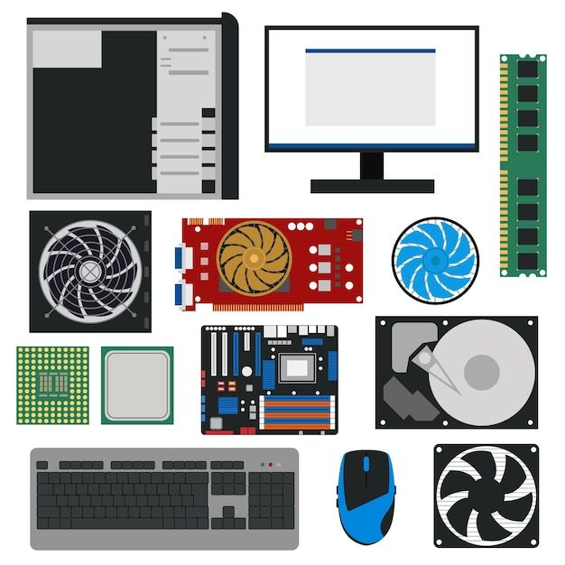

Bienvenido
Aquí encuentras componentes nuevos con garantía de fábrica y componentes usados revisados y con garantía limitada. Elige un catálogo para ver los productos disponibles.

Aquí encuentras componentes nuevos con garantía de fábrica y componentes usados revisados y con garantía limitada. Elige un catálogo para ver los productos disponibles.